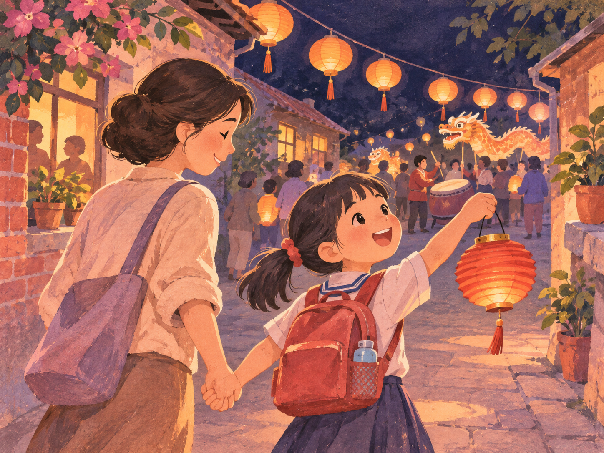

你想聊哪一題？
換孩子操作，選一題來聊。
孩子先想、先答，請家長等一等。
你想先自己想，還是看一個例子？
給家長 · 先讓孩子替故事加一句，再接上你自己的一句。
給家長
等孩子先說，再問「你從哪裡看出來的？」
小小解說員
用一句話介紹你的燈籠。你可以先說給家長聽，也可以錄下來自己回聽。
My lantern became a …
錄音只留在目前的頁籤，重新整理或關閉頁籤後會清除。
先把想加的一句說給家長聽，再按「重新錄音」把兩句一起說。

換孩子操作，選一題來聊。
孩子先想、先答，請家長等一等。
你想先自己想，還是看一個例子？
給家長 · 先讓孩子替故事加一句，再接上你自己的一句。
等孩子先說，再問「你從哪裡看出來的？」
用一句話介紹你的燈籠。你可以先說給家長聽，也可以錄下來自己回聽。
My lantern became a …
錄音只留在目前的頁籤，重新整理或關閉頁籤後會清除。
先把想加的一句說給家長聽，再按「重新錄音」把兩句一起說。
由觀察者填入這次試讀的操作次數。翻頁、選題、比較光斑及提交答案，每完成一次就記給實際操作者。
填入實際次數後顯示兒童操作占比，評量門檻為 70%。
第三頁的回答會列在下方，方便對照孩子如何延伸想法。紀錄保留到本頁重新整理或關閉為止。
| 題型 | 第一輪原話 | 追問 | 第二輪原話 | 孩子的光影選擇 |
|---|
目前還沒有回答紀錄。
錄音感受尚未填寫。